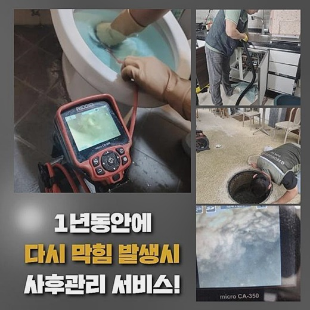
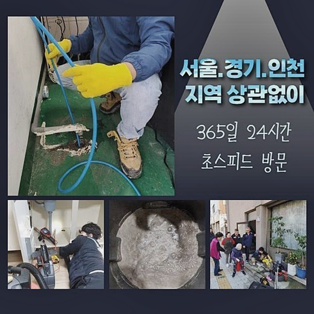
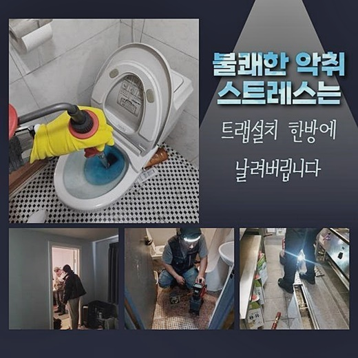
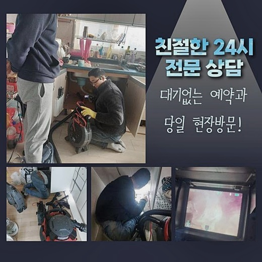
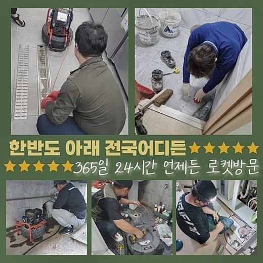
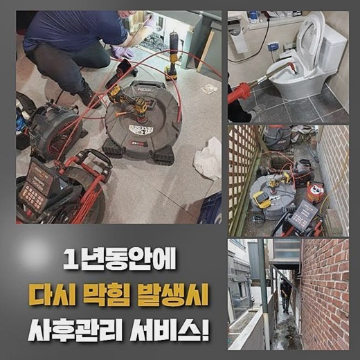

🏠 노원구 하수도뚫음 중계본동 하수구뚫는곳 배관뚫는업체
서울 노원구 하수구막힘 전문 시공 후기

📋 작업 개요
- 위치: 서울 노원구, 노원구, 서울
- 서비스 유형: 하수구막힘, 배관막힘, 역류해결, 뚫는업체, 고압세척
- 작업 일시: 2024. 10. 7. 0:12
- 업체명: 하수구수사대 (010-5615-2118)
🔍 문제 상황
노원구 하수도뚫음 중계본동 하수구뚫는곳 배관뚫는업체
저흰 빨간날이라고해도 고객님께서 의뢰주신다면 신속히내방해 작업해드립니다
고객분의 편리함을 우선으로두어 빠른대응으로 해결해드릴 준비를하고있어요
사소한부분도 신경써서 해결하기위하여 노력하고있어요
최근에 내방했던곳은 긴박한 상황이었는데 고객의요청에 신속빠르게 대응해볼수 있었답니다
최신기기를 모두갖춘채 방문했기에 효율적인 방식으로 문제처리가 가능했어요
고객님께선 각종막힘으로 인해서 곤란함을 경험했다고 말씀해주셨지만 지금처럼 심하게막히고 역류까지 보이는건 처음경험한다고 말해주셔서 긴급한상태였죠
현장경험을 통하여 얻은기술이나 노하우로 문제를확실히 해결할수가 있었네요
매장을 운영하는데 지장이없게끔 만들어드렸답니다

🔎 원인 분석
💡 전문가 진단: 정밀 진단 장비를 사용하여 슬러지의 고착 여부를 판명하고 타격/세척 작업을 실시했습니다.
긴급한 상황이라해도 일상생활을 하실때 지장없게끔 심혈을기울인 작업으로 진행하는것이 저희들의 목표랍니다
다음에 방문한곳을 소개해드려 보겠습니다
먼저고객님과 인사를나눈후 안쪽으로들어가 문제가 발생된위치를 발견했어요
보일러배관에서 발생된 역류문제때문에 물이넘쳐버린 상황이었죠
상태가 심해지기전에 빠른작업이 요구됐기에 빠르게방문해 수리해드렸답니다
작업한결과 뚫을수있었고 배수시스템이 정상적인 상황으로 복구되었죠
신속한해결이 필요한곳에서는 신뢰할만한 전문인을 호출하는것이 중요하답니다
전문인호출시 전문장비들을 보유하고있는지와 여러현장경험을 갖추고있는지까지 확인해보시는게 좋아요
저희들은 전문장비와 다양한경력을 토대로 작업해드리고있죠
이번장소는 하수관내부에서 일어난 사례였는데 내버려둔다면 추가적인피해가 발생할수도 있었으므로 고객분께서 조속하게 의뢰주셨어요

🔧 작업 과정
상황이어떠한지 조속히인지하여 저희들에게 맡기셨고 그나마 인지를하셔서 막힘현상이 심각해지기전에 문제처리를 할수있었죠
막힌이유를 확인해봤더니 배관입구쪽에 굳은석회물이 존재했기 때문이에요
덩어리들은 시간이흐르면서 점점굳게되면서 막히게된건데요
분쇄기기를 사용해서 덩어리물질을 분해했습니다
샤프트기는 빠른속도로 돌아가며 하수도내벽에 자리잡은 잔해물질을 깔끔히 분쇄시키는 역할을하고있죠
분쇄시킨후 내시경장비로 하수구를 세부적으로 검사해봤는데요
하수구카메라 끝부분쪽에는 라이트가붙어있어 배관깊은부분도 살펴볼수있는 장비에요
많은양의 이물질과 머리칼이 섞여지면서 뭉쳐진것을 확인했고 이를의뢰자께 모니터화면을 통해 보여드려서 상태가어떠한지 이해하실수 있으셨어요
예측했던것보다 더많은 모발들과 오염물질이 쌓인상태였고 이것들을 제거해주는것이 뚫을수있는 방법입니다
머리카락과 뭉쳐진 이물은 하수관을 막기쉬우므로 주기적으로 세척하지못하면 큰문제로 야기될수있죠
제거를끝마치고 상태를보니 새로운배관으로 설치해보거나 2차적인피해없이 해결가능했죠
문제요지를 자세히파악해서 명백한 해결책으로 제시해야합니다 잘못판단하여 과잉작업으로 이어지는것은 안되기에 그런것이죠
앞에 일러드렸지만 하수구카메라로 자세하게 검사한뒤 오염물을 소거하여 하수배관을 깔끔히 관리해줘야해요
잘 관리해주면 이물이 축적되는걸 예방할수있으며 약간의 오염물질도 배수구안에 잔여되면 막히는현상이 똑같이 일어날수도있어 섬세한시공이 필요해요!
하수도는보통 신경을쓰지 않으시다보니 막힘증상이 발생하기쉽고 막힘증세외에도 역류까지있으면 조속하게 해결해야합니다
혹여나 방치하실경우 물이넘치거나 새는경우로 연결되어 피해받으실수 있으므로 시간상관없이 막히게되셨다면 의뢰주세요!


✅ 작업 완료
저흰항상 고객의 편의성을위해 최선을다하고 뚫어내고자 최대한의 조치를취해드릴 준비를하고있어요
60분안쪽으로 작업장소로 도착할수있고 투명한 수립계획을 공개하니 염려마시길 바래요
배관에증세가 발현된경우 방임하시지말고 문의주시면 친절한상담을 약속드릴게요
이것외에도 궁금한것들이 있다고하신다면 전화를통해 질문하시면 상세한 상담으로 도울게요



⚠️ 하수구 배관 막힘 예방 및 관리 가이드
- ✅ 머리카락, 비닐, 물티슈 등 물에 분해되지 않는 이물질은 하수구 유입을 절대 금지해 주세요.
- ✅ 하수구 거름망을 씌우고 모여진 이물질은 주기적으로 쓰레기통에 바로 비워주셔야 합니다.
- ✅ 배관 노후가 심할 경우 이물질이 더 쉽게 걸리므로 주기적인 배관 세척(고압세척 등)을 권장합니다.
- ✅ 작업 후 1년 이내 재발 시 하수구수사대에서 무상 A/S 보증 서비스를 제공합니다.
💡 핵심 정리
- 확실한 장비 작업(내시경 점검 및 샤프트 스케일링)으로 원인을 뿌리 뽑습니다.
- 작업 후 1년 이내에 동일한 부위 재발 시 100% 무상 A/S 서비스를 보장합니다.
- 서울 · 경기 · 인천 전 지역에 24시간 언제든 긴급 출동할 수 있도록 항시 대기 중입니다.
❓ 자주 묻는 질문 (FAQ)
🚨 서울 노원구 하수구막힘 문제로 고민이신가요?
정확한 원인 진단과 확실한 시공으로 재발 없는 해결을 약속드립니다.
24시간 긴급 출동 | 서울 · 경기 · 인천 전지역 | 1년 내 재발 시 무상 A/S